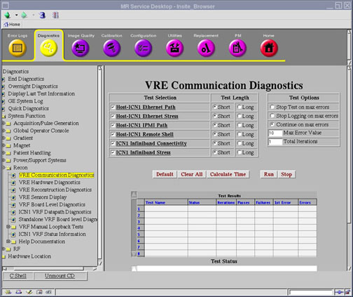

Operating Documentation
Direction 5670006, Rev# 1
Discovery MR750w GEM Service Methods
Module Version 5.0, Version Date 8/19/08
Operating Documentation |
Diagnostics >> System Function >> Recon >> VRE Communication Diagnostics
Diagnostics >> Hardware Location >> PGR Cabinet >> Recon >> VRE Communication Diagnostics
Illustration 1: VRE Communication Diagnostics

The purpose of this diagnostic is to stress the Ethernet network path between the host and ICN to verify it meets the minimum throughput requirements of 50 MB/sec.
Host Ethernet interface
Host to VRE switch Ethernet cable
VRE switch to ICN Ethernet cable
ICN Ethernet interface
VRE switch
All the Ethernet cables are connected from the host to the VRE Ethernet switch.
All the Ethernet cables are connected from the ICN to the VRE Ethernet switch.
The ICN is turned on.
Illustration 2: System Cabinet and GOC Diagram for VRE Communications

Verify all the Ethernet cables are connected.
Select the Host-ICN Ethernet Stress Diagnostic from the VRE Communication Diagnostics screen.
Click [Run].
| NOTE: | Once you click [Run], do not click anywhere else in the Common Service Desktop until the test is complete. If you need to abort the test prior to its completion, you must click [Stop]. |
Ensure that the ICN passes the diagnostic by reviewing the status in the Test Results table.
The results for this diagnostic can be passed, failed, or no ICNs defined. If the diagnostic has failed, please review the error log and corresponding extended error messages for subsequent actions. Additional responses to the diagnostic's failed result are outlined in Table 1.
Table 1: Diagnostic Results
| Result | Description | GE Field Action |
| Passed | The ICN passed the diagnostic. | No further action required. |
| Failed | The ICN failed the diagnostic. |
|
| No ICNs defined | Host has no ICNs defined. | Refer to and run VRE Reconfiguration. |